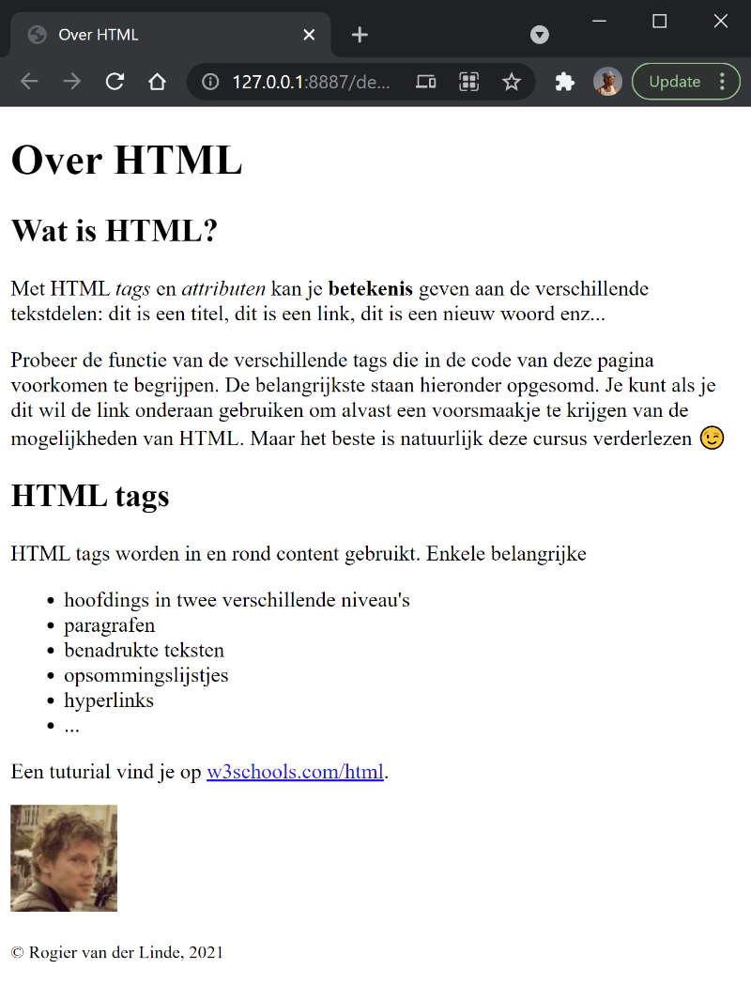
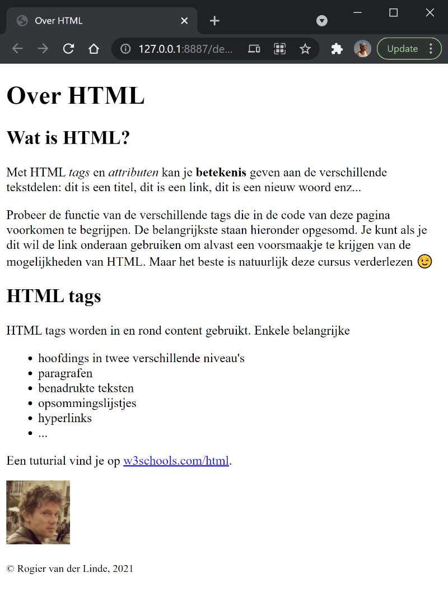

SYNTAX
gebruik pijltjestoetsen om te navigerenSYNTAX
HTML markup
HTML markup (1)
- Met HTML geef je structuur en betekenis aan content zodat de browser weet hoe het weergegeven moet worden, en kan je extra niet-tekstuele inhoud invoegen als afbeeldingen, video... Nemen we deze platte tekst, zonder structuur:
-
Over HTML Wat is HTML? Met HTML tags en attributen kan je betekenis geven aan de verschillende tekstdelen: dit is een titel, dit is een link, dit is een nieuw woord enz... Probeer de functie van de verschillende tags die in de code van deze pagina voorkomen te begrijpen. De belangrijkste staan hieronder opgesomd. Je kunt als je dit wil de link onderaan gebruiken om alvast een voorsmaakje te krijgen van de mogelijkheden van HTML. Maar het beste is natuurlijk deze cursus verderlezen 😉 HTML tags HTML tags worden in en rond content gebruikt. Enkele belangrijke: hoofdings in verschillende niveau's paragrafen benadrukte tekst opsommingslijstje hyperlink de afbeelding ... Een tuturial vind je op w3schools.com/html. © Rogier van der Linde, 2021
HTML markup (2)
- Dezelfde tekst, maar dan met structuur en een afbeelding onderaan toegevoegd:
-
<!DOCTYPE html> <html lang="nl"> <head> <title>Over HTML</title> <meta charset="utf-8"> </head> <body> <h1>Over HTML</h1> <h2>Wat is HTML?</h2> <p> Met HTML <em>tags</em> en <em>attributen</em> kan je <strong>betekenis </strong> geven aan de verschillende tekstdelen: dit is een titel, dit is een link, dit is een nieuw woord enz... </p> <p> Probeer de functie van de verschillende tags die in de code van deze pagina voorkomen te begrijpen. De belangrijkste staan hieronder opgesomd. Je kunt als je dit wil de link onderaan gebruiken om alvast een voorsmaakje te krijgen van de mogelijkheden van HTML. Maar het beste is natuurlijk deze cursus verderlezen 😉 </p> <h2>HTML tags</h2> <p>HTML tags worden in en rond content gebruikt. Enkele belangrijke</p> <ul> <li>hoofdings in twee verschillende niveau's</li> <li>paragrafen</li> <li>benadrukte teksten</li> <li>opsommingslijstjes</li> <li>hyperlinks</li> <li>...</li> </ul> <p> Een tuturial vind je op <a href="http://www.w3schools.com/">w3schools.com/html</a>. </p> <p><img src="https://www.gravatar.com/avatar/074c8b6380f34a37df72aa657e97be90" alt="Rogier van der Linde profile picture"></p> <small>© Rogier van der Linde, 2021</small> </body> </html> - de HTML codes rond de tekst noemt men markup
- probeer het zelf uit! maak een nieuw tekstbestand, kopieer deze code, sla het op als test.html, en open het in de browser
Weergave in de browser
- Dankzij de HTML markup weet de browser hoe de pagina weergegeven moet worden. Merk op hoe de content zich aanpast aan de breedte van het venster:
 

- de opmaak is nog erg beperkt; dit lossen we later op in de cursus CSS
Code layout
- Browsers negeren code layout: alle dubbele spaties, tabs, enters enz... worden omgezet naar enkele spaties. Voor browsers zijn volgende codes dus identiek:
-
<!DOCTYPE html> <html lang="nl"> <head> <title>Over HTML</title> <meta charset="utf-8"> </head> <body> <h1>Over HTML</h1> <h2>Wat is HTML?</h2> <p> Met HTML <em>tags</em> en <em>attributen</em> kan je <strong>betekenis </strong> geven aan de verschillende tekstdelen: dit is een titel, dit is een link, dit is een nieuw woord enz... </p> <p> Probeer de functie van de verschillende tags die in de code van deze pagina voorkomen te begrijpen. De belangrijkste staan hieronder opgesomd. Je kunt als je dit wil de link onderaan gebruiken om alvast een voorsmaakje te krijgen van de mogelijkheden van HTML. Maar het beste is natuurlijk deze cursus verderlezen 😉 </p> <h2>HTML tags</h2> <p>HTML tags worden in en rond content gebruikt. Enkele belangrijke</p> <ul> <li>hoofdings in twee verschillende niveau's</li> <li>paragrafen</li> <li>benadrukte teksten</li> <li>opsommingslijstjes</li> <li>hyperlinks</li> <li>...</li> </ul> <p> Een tuturial vind je op <a href="http://www.w3schools.com/">w3schools.com/html</a>. </p> <p><img src="https://www.gravatar.com/avatar/074c8b6380f34a37df72aa657e97be90" alt="Rogier van der Linde profile picture"></p> <small>© Rogier van der Linde, 2021</small> </body> </html> -
<!DOCTYPE html><html lang="nl"> <head> <title>Over HTML</title> <meta charset="utf-8"> </head> <body> <h1>Over HTML</h1> <h2>Wat is HTML?</h2> <p> Met HTML <em>tags</em> en <em>attributen</em> kan je <strong>betekenis</strong> geven aan de verschillende tekstdelen: dit is een titel, dit is een link, dit is een nieuw woord enz... </p> <p> Probeer de functie van de verschillende tags die in de code van deze pagina voorkomen te begrijpen. De belangrijkste staan hieronder opgesomd. Je kunt als je dit wil de link onderaan gebruiken om alvast een voorsmaakje te krijgen van de mogelijkheden van HTML. Maar het beste is natuurlijk deze cursus verderlezen 😉 </p> <h2>HTML tags</h2> <p>HTML tags worden in en rond content gebruikt. Enkele belangrijke</p> <ul> <li>hoofdings in twee verschillende niveau's</li> <li>paragrafen</li> <li>benadrukte teksten</li> <li>opsommingslijstjes</li> <li>hyperlinks</li> <li> ...</li> </ul> <p> Een tuturial vind je op <a href="http://www.w3schools.com/">w3schools.com/html</a>. </p><p><img src="https://www.gravatar.com/avatar/074c8b6380f34a37df72aa657e97be90" alt="Rogier van der Linde profile picture"> </p> <small>© Rogier van der Linde, 2021</small> </body> </html>
Hoofdlettergebruik
- Browsers maken geen onderscheid tussen hoofd- en kleine letters bij HTML. Voor browsers zijn volgende codes dus identiek:
-
<p><img src="https://www.odisee.be/img/logo.png" alt="Odisee logo"></p> -
<P><IMG SRC="https://www.odisee.be/img/logo.png" alt="Odisee logo"></P> -
<p><Img Src="https://www.odisee.be/img/logo.png" ALT="Odisee logo"></P>
Quotegebruik
- Rond attributen aanvaarden browsers dubbele quotes, enkele quotes of zelfs geen quotes (als de waarde geen spatie bevat). Voor browsers zijn volgende codes dus identiek:
-
<p><img src="https://www.odisee.be/img/logo.png" alt="Odisee logo"></p> -
<p><img src='https://www.odisee.be/img/logo.png' alt='Odisee logo'></p> -
<p><img src=https://www.odisee.be/img/logo.png alt="Odisee logo"></p>
Huisregels
- Een correcte layout en consequent quote- en hoofdlettergebruik van je code is dus niet voor de browser, maar voor de leesbaarheid van je code.
-
Welke regels je volgt is kwestie van smaak, dus discussiëren heeft geen zin, maar uniforme afspraken zijn nodig voor jezelf en je teamleden. In deze cursus (verplicht!):
- layout met tabs óf spaties, geen mix!
- gebruik kleine letters voor tags, dus
<img>maar niet<IMG>of<Img> - gebruik kleine letters voor attributen, dus
<a href="...">en niet<a HREF="...">of<a Href="...> - zet double quotes rond attribuutwaarden, dus
<a href="...">en niet<a href='...'>of<a href=...>
- verzorg je layout: ofwel open- en sluittag op dezelfde regel, ofwel op aparte regels met inhoud ingesprongen
<xxx>...</xxx>
<xxx>
...
...
...
</xxx>SYNTAX
HTML basisdocument
Basisdocument
- Elke HTML pagina heeft minimaal deze structuur:
-
<!DOCTYPE html> <html lang="en"> <head> <title>Basispagina</title> <meta charset="utf-8"> </head> <body> <p>...hier komt de rest van de HTML...</p> </body> </html>
Oudere versies [O]
- Soms kom je nog oudere, nodeloos complexe versies tegen, zoals deze XHTML1.1:
-
<!DOCTYPE html PUBLIC "-//W3C//DTD XHTML 1.1//EN" "http://www.w3.org/TR/xhtml11/DTD/xhtml11.dtd"> <html xmlns="http://www.w3.org/1999/xhtml" xml:lang="nl"> <head> <title>Basispagina</title> <meta http-equiv="Content-Type" content="text/html; charset=ISO-8859-1"> <script type="text/javascript" src="js/scripts.js"></script> <link type="text/css" rel="stylesheet" href="css/styles.css"> </head> <body> <p>...hier komt de rest van de HTML...</p> </body> </html>
- gebruik altijd de HTML5 versie op vorige slide
It is important that the language attribute is set and correct, or screenreaders will try to read
the content in a wrong language, which sounds rather funny
Verplichte onderdelen
-
De door de HTML standaard verplichten onderdelen met hun betekenis:
-
<!DOCTYPE html>: HTML document type declaratie en versie
→ voor HTML5 is dit<!DOCTYPE html> -
<html lang="...">element: het eigenlijke HTML document; hetlangbevat de taal van de pagina (en/nl/fr...), o.a. voor screen readers en zoekmachines -
<head>: bevat alle medadata van de pagina (meestal optioneel): titel, karakterset, meta information, auteur, beschrijving, trefwoorden, links naar CSS en scripts, favicon...
-
<title>: pagina titel gebruikt op browser tabbladen en resultaten van zoekmachines -
<body>: bevat alle zichtbare inhoud van de pagina with all the titles, texts, images, videos...
-
Metatags [O]
- Voorziet bijkomende informatie of metadata over het HTML document.
- Bestaat in regel uit naam/waarde paren:
<head> ... <meta name="description" content="Slides voor Basic Web Development"> <meta name="keywords" content="HTML, CSS"> <meta name="author" content="Rogier van der Linde"> </head>- er bestaan zeer veel van dergelijke metatags; in feite mag je zelf eender welke naa/waarde paar bedenken
- description en keywords waren vroeger nuttig voor zoekmachines, maar worden vandaag volledig genegeerd
Link relaties[O]
- Koppelt bijkomende bronnen aan het document:
<head> ... <link rel="icon" href="favicon.ico"><!-- link een icoon aan de pagina --> <link rel="stylesheet" href="css/main.css"><!-- link een CSS bestand --> </head>
SYNTAX
HTML syntax
Tag, Element, Attribuut
- Alle HTML codes samen noemt men de markup van een pagina.
- De markup bestaat uit tags die aan de tekst toegevoegd worden, bijvoorbeeld
<h1>,<img>,<a>,<p>... - Aan tags kunnen attributen toegevoegd worden met de eigenschappen van de tags, bijvoorbeeld
<img src="..." alt="...">,<a href="...">... -
Tags vormen elementen:
- leeg element:
<xxx>, e.g.<img>; voegt content toe -
niet-leeg element:
<xxx>...</xxx>; markeert content - de meeste elementen zijn niet-lege elementen
- leeg element:
Blocklevel and inline
- Sommige elementen als titels, paragrafen, lijstjes e.d. worden door de browser op aparte regels onder elkaar getoond; dit zijn blocklevel elementen. Andere elementen als hyperlinks mogen in een tekstregel staan en worden naast elkaar getoond, en heten inline elementen.
-
Blocklevel of inline?
<h1>,<h2>,<p>,<a>,<ul>,<li>,<em>,<img>
Nesten van elementen
-
Lege elementen kunnen (uiteraard) geen andere elementen bevatten:
- een afbeelding
<img>kan geen andere elementen bevatten
- een afbeelding
-
Blocklevel elementen kunnen meestal geen blocklevel elementen bevatten:
- een titel
<h1>of<h2>kan geen paragraaf<p>of lijstje<ul>bevatten - een paragraaf
<p>kan geen lijstje<ul>bevatten - zet ze onder elkaar i.p.v. genest
- een titel
-
Er zijn echter redelijk wat uitzonderingen:
- een quote
<blockquote>mag paragrafen<p>bevatten - een artikelblok
<article>mag zowat alles bevatten: titels<h1>, lijstjes<ul>, paragrafen<p>...
- een quote
-
Ze kunnen wel inline elementen bevatten:
- een titel
<h1>kan een link<a>bevatten
- een titel
-
Inline elementen kunnen geen blocklevel elementen bevatten:
- een benadrukte tekst
<strong>kan geen paragraaf<p>bevatten
- een benadrukte tekst
-
Ze kunnen wel inline elementen bevatten:
- een link
<a>kan een<img>bevatten
- een link
- volg je gezond verstand, en gebruik de W3C HTML validator
HTML commentaar
- Alles tussen
<!--and-->wordt genegeerd - Code verduidelijken met commentaar is een goede gewoonte, niet alleen voor jezelf maar ook voor je teamleden (en docent!). Je kan het ook gebruiken om een stuk code tijdelijk uit te schakelen (bv. tijdens het debuggen):
... <li>boter</li> <li>kaas</li> <li>eieren</li> </ul> <!-- Er zit hier ergens nog een foutje <p> Volg deze link om naar de <a href="http://www.w3schools.com/>w3schools tutorials</a te gaan> </p> --> </body> </html>